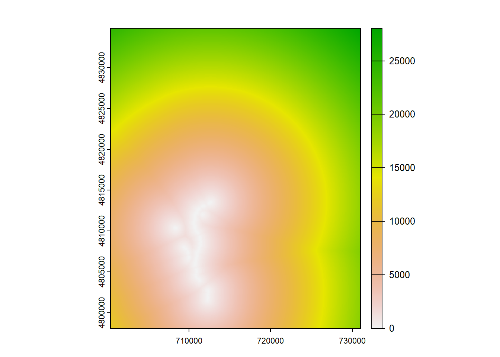

Chapter 5 The Beavers
Now we’ll switch gears and start looking at the beaver dam data. This table includes all of the data that was collected in the summer of 2024 while censusing beaver dams. See Chapter 1.3 for all of the columns included in this table.The ultimate goal of this chapter is to end up with a beaver dam data set that is cleaned up and ready to analyze, and to create some figures using that data.
5.1 Load Packages and Data
As usual, we’ll first load in the necessary packages and data for this chapter.
5.2 Clean the (Dam) Data
Next, we’ll clean up the beaver dam data a bit to make it more readable, and so that all measurements are in the metric system.
# clean up the data
dams <- dams %>% clean_names() %>% select(c(2:11)) %>%
mutate(height_cm = height_in * 2.54) %>%
mutate(height_in = NULL) %>%
mutate(water_table_cm = water_table_in * 2.54) %>%
mutate(water_table_in = NULL)
dams$height_cm <- round(dams$height_cm, digits = 0)
dams$water_table_cm <- round(dams$water_table_cm, digits = 0)
dams <- dams[-(287:299), ]5.3 Template
Now we must create a raster template that we can crop the dam data to. As seen below, the first line is loading a “bound_box” file into the environment. This was created in a previous script not included in this document, for brevity’s sake. In short, this is a rectangular raster whose four corners are defined by the minimum and maximum X and Y coordinates from the hens’ GPS fixes. The result, then, is a boundary box that contains all of the locations of all 23 hens. This is important because any covariates included in the model (elevation, slope, etc) will then be cropped down to this box to reduce unnecessary computation.
5.4 Dam Conversion
The next step is to convert the dam data, which is currently a data frame, into vector data (points, lines and polygons) that matches the CRS of the study site (UTM zone 11). Then, that vector data can be rasterized (converted to pixels, where each pixel has a value) and fit to the boundary box that we created in 4.3.
5.5 Raster Calculations
Now that we have the dam data in raster format and properly cropped to our area of interest, we can manipulate it for the purposes of this study. The code here is simple. The distance function computes the geographic distance from a pixel with a dam to each cell within the entire raster. Then, when this is plotted, we achieve a heat map of the area of interest with a distance associated with each 30m pixel to the closest dam.
# calculate distance to dam cell values
all_dis_to_dams <- terra::distance(all_dams_raster)
plot(all_dis_to_dams)